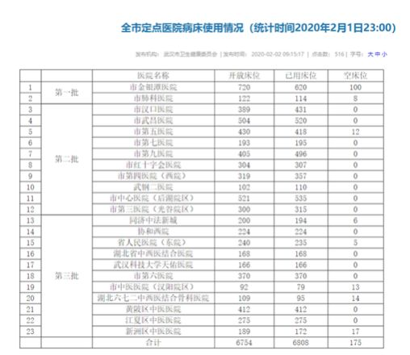

黄冈确诊病例突破一千，何以至此？
原文链接 备份链接 02.02.2020本文字数：1995，阅读时长大约3.5分钟 导读：随着送检加快，黄冈今天确诊病例还将继续大增，但医药物资短缺等客观形势下，防控形势十分严峻。 作者 | 第一财经 陈益刊 紧邻武汉的湖北省黄冈市，新 …

非常时期，武汉成了全国人民挂念、祈福的城市。封城后，武汉人民的真实生活是什么样？
正和岛自1月26日起特别推出《叶青：我在武汉疫区的第N天》专栏。叶青是一位定居武汉40年的市民，也是一名学者和官员。接下来的一段时间，他会用笔记录下亲身经历的、观察到的武汉，为此他还专门外出到大街上、到超市里，获得一手真实的信息。这将是一份宝贵的史料。感谢他，我们得以更真切地感知到武汉疫情。让我们一起为武汉加油！
作者：叶青 中南财经政法大学教授、博导 湖北省统计局副局长 正和岛蓝色岛邻
封面：红星新闻
来源：正和岛案例（ID：zhenghedaoanli）

感谢正和岛
1月22日上午，宣传部门的一个朋友打来电话：建议我在“新型肺炎”做一点记录与宣传。作为网络人士，我立刻答应了。
23日，在微信公众号《中部之声》登文《二级应急响应：我们应该怎么做？》
从此，每天以《叶青疫区日记》的方式记录武汉的大事小情与自己的建议。
微信公众号《正和岛》从25日开始登文《武汉真实口述：最无辜的人是他们……》，阅读量近60万。
现在又在微信公众号“正和岛案例”中继续刊登“疫区日记”。
非常感谢正和岛。

武汉死亡32例
1日，正月初八，阳光灿烂。
没有新型肺炎的话，应该是上班的第二天。
1日，全国新增确诊病例2590例（湖北省1921例），新增重症病例315例（湖北省268例），新增死亡病例45例（湖北省45例），新增治愈出院病例85例（湖北省49例），新增疑似病例4562例（湖北省2606例）。
截至2月1日24时，全国累计报告确诊病例14380例，累计死亡病例304例，突破300。累计治愈出院病例328例，共有疑似病例19544例。
世界卫生组织2003年8月15日公布统计数字，截至8月7日，全球累计非典病例共8422例，涉及32个国家和地区。全球因非典死亡人数919人，病死率近11％。
其中：中国内地累计病例5327例，死亡349人；中国香港1755例，死亡300人；中国台湾665例，死亡180人；加拿大251例，死亡41人；新加坡238例，死亡33人；越南63例，死亡5人。
1日，湖北省新增病例1921例（其中，武汉市894例、襄阳市94例、宜昌市77例、荆门市78例、孝感市121例、黄冈市276例）；全省新增死亡45例 (武汉市32例、荆门市2例、鄂州市4例、孝感市2例、黄冈市1例、随州市2例、仙桃市2例)。
虽然武汉只有死亡32例，但是武汉之外的数字在无情地增加。

超市的管理还可以完善
武汉封城限车后，除了医院，就是超市人多。
五天前我对超市管理提出六个硬核建议：测温、限制老幼病孕进超市、自助支付、交费一米外等待、戴口罩手套、口罩手套不入家门衣裤挂凉台。看来有作用。
党外知识分子就是提建议的，能不能接受不是我们考虑的事情。
1日上午，我去龙城社区中百超市买点菜，看到人们在排队等待进入超市，测温，然后出一个进一个。
这样做好处多多，控制超市人流量，限制老幼病孕进入。而进入超市者尽量买多点，买快点。
不过现在小超市还没有测温，而且价格高。运菜车辆只能以小车代替。

在超市里，还有需要完善之处。
现在人们去超市，都是直奔一楼的蔬菜、粮油、水果、卫生用品柜台。其他商品基本上无人问津，二楼一般是没有人的。一楼有一半的区域又非常拥挤。
我建议调整货架。在医院周围的小超市，销量最大的是压缩饼干和成人纸尿裤。小超市就把这两样商品放在最方便的地方，但是，大超市摆货没有变化。
此外，腾讯在管控谣言方面又有进步。有的文章是只能看，不能转发的。这可以有效地解决无限制地谣言传播的问题。

公布床位
对于病毒性肺炎的病人来说，有一个床位，就意味着生机。很多老年病人过世，就是因为得不到及时的入院救治。因此，市民对床位数很不清楚，可能会带着生病的家人到处找医院、找床位。产生新的病人。
1日，武汉市决定建立收治病人台账，认真排查，每天向社会公布床位情况，确保应检尽检、应收尽收。以安抚民众。
2日上午9时许，武汉卫健委官网公布武汉市23家定点医院病床使用情况。

看来床位是非常紧张的。火神山、雷神山两大医院可以提供3000左右床位，总数在1万左右。
表格中的开放床位不完全等于已用床位＋空床位。空床位数存在动态变化，也受医院医务人员、物资等收治能力因素的影响。
有网民提出，发烧别人在家隔离很危险，建议征用宾馆，在“宾馆隔离”，解决病人在家继续传染的问题。可不可行？

比武汉更严的管控
从“封城”十天的情况来看，在武汉的人实际上影响不大，比在外的武汉人过得好多了。
现在，进小区要测温，进中南财大南湖校区也测温；进大超市要测温。没有接到手机短信通知的车，也可以出门。
1日，更严格的管控出现在距离武汉60公里的黄冈。
1日起，在黄冈市区范围内实行居民出行管控措施。每户家庭每两天可指派1名家庭成员上街采购生活物资，其他人员除生病就医、疫情防控工作需要、在商超和药店上班外，不得外出。
市区所有党员干部、人大代表、政协委员要发挥带头作用，管好自己、家人、亲属，带动街坊邻居，协助工作人员劝导小区居民按要求少出门、少上街、不串门、不聚集。
原因很简单。
截至1月31日24时，黄冈市累计报告新型冠状病毒感染的肺炎病例726例，死亡14例，成为湖北省内仅次于武汉的第二疫情高发区。

四川出台十大措施
30日，四川在全国率先印发《全力加快疫情防控物资生产十条措施》：
一、各级政府要及时安排应急物资采购资金，加大采购防护服、口罩、护目镜等疫情防控急需物资力度。
二、支持凡涉口罩、防护服、电子测温仪等疫情防控物资生产企业加班加点生产，对纳入支持企业的员工加班工资，在省级工业发展资金中按国家规定给予补助。
三、对于纳入支持的疫情防控物资生产企业，在疫情防控期间生产的产品，其应缴纳的增值税、所得税，按国家政策规定予以减免，或按其缴纳额，通过财政支出方式，予以全额补助；需缴纳的相关费用全部免除。
四、银行业金融机构要主动对接，积极加大疫情防控物资生产企业融资支持，对纳入支持企业的技术改造、流动资金贷款，给予利率优惠，由省级工业发展资金给予50%的贷款贴息支持。
五、支持疫情防控物资生产企业抓紧开展扩产扩能技术改造，对符合条件的，由省级工业发展资金按设备投资额的50%给予补助。
六、纳入省上支持的、具备一定条件的企业转型生产口罩、防护服等，对生产出符合标准产品的，由省级工业发展资金按企业设备投资额的50%给予补助。
七、相关部门要对生产企业注册疫情防控所需产品主动上门服务，建立应急审批“绿色通道”，应缴纳的相关费用予以免除。
八、支持企业加大疫情防控新产品研发攻关，在新产品上市后，由省级工业发展资金按研发投入总额的50%给予奖励。
九、建立“一厂一组”驻厂联络制度，专人专班协调解决疫情防控物资生产企业的原辅材料、生产设备、能源要素等方面困难问题，支持企业满负荷生产扩产。
十、加强物流运输保障，对疫情防控物资、原辅材料、生产设备等紧急物资，开辟物流“绿色通道”。
可以说内容完整、富有操作性，含金量很高。感谢四川的支持。
这是所有省份中最早公布措施的。

总结
很多措施在十天之间，得到了雷厉风行的实施。
死亡病例总数在无情地增加，接近当年“非典”。作为这场风暴中的“眼”，武汉人在盯住每天增加的数据。
大家都在期盼拐点。
作者：叶青，1962年3月出生，第十、十一届全国人大代表、国务院新闻办专家库专家，曾任中国民主促进会湖北省委员会副主任委员（2000-2017）。他被网民称为“中国最具个性官员”、“车改第一人”，曾荣获2007年度人民网十大社会责任博客、南方周末2011年两会“十大言者”、《南风窗》2012年十大公益人物、2019政务微博十年·先锋等等。
原文链接 备份链接 02.02.2020本文字数：1995，阅读时长大约3.5分钟 导读：随着送检加快，黄冈今天确诊病例还将继续大增，但医药物资短缺等客观形势下，防控形势十分严峻。 作者 | 第一财经 陈益刊 紧邻武汉的湖北省黄冈市，新 …
原文链接 备份链接 1月30日，曾患新型冠状病毒感染的肺炎的北京大学第一医院呼吸和危重症医学科主任王广发在北京地坛医院治愈出院。他是北京市第5名治愈出院的新型冠状病毒感染的肺炎患者。新华社发（任超 摄） 采访·整理 秦珍子 编辑 张国 国 …
原文链接 备份链接 作者 | 孙宏超 编辑 | 康晓 出品｜深网·腾讯小满工作室 欢迎下载腾讯新闻APP，阅读更多优质资讯 _编者按：_牵一发而动全身，面对疫情，需要中国全行业上下游企业携手共度难关，深网推出《共克时艰》系列报道，是为第一 …
原文链接 备份链接 老母亲问我为啥这么拼命，又没人给开工资。我回说，这次真的拼了命了，只因为我是您的孩子，也是一个父亲。这不，我看到日本朋友捐助武汉的物资上，日本汉语水平考试事务所物资上的字——“山川异域，风月同天”。作为武汉人，难道我不 …
原文链接 备份链接 《战疫口述记》，是燃财经在新型冠状病毒肺炎期间推出的特别栏目，记录疫情亲历者的观察和感受。本文为第6篇，查看前5篇请点击《我和公司都快熬不住了》《节后返京，太太太南了》《我的“流浪”春节》《农村这样防肺炎》《我在武汉 …